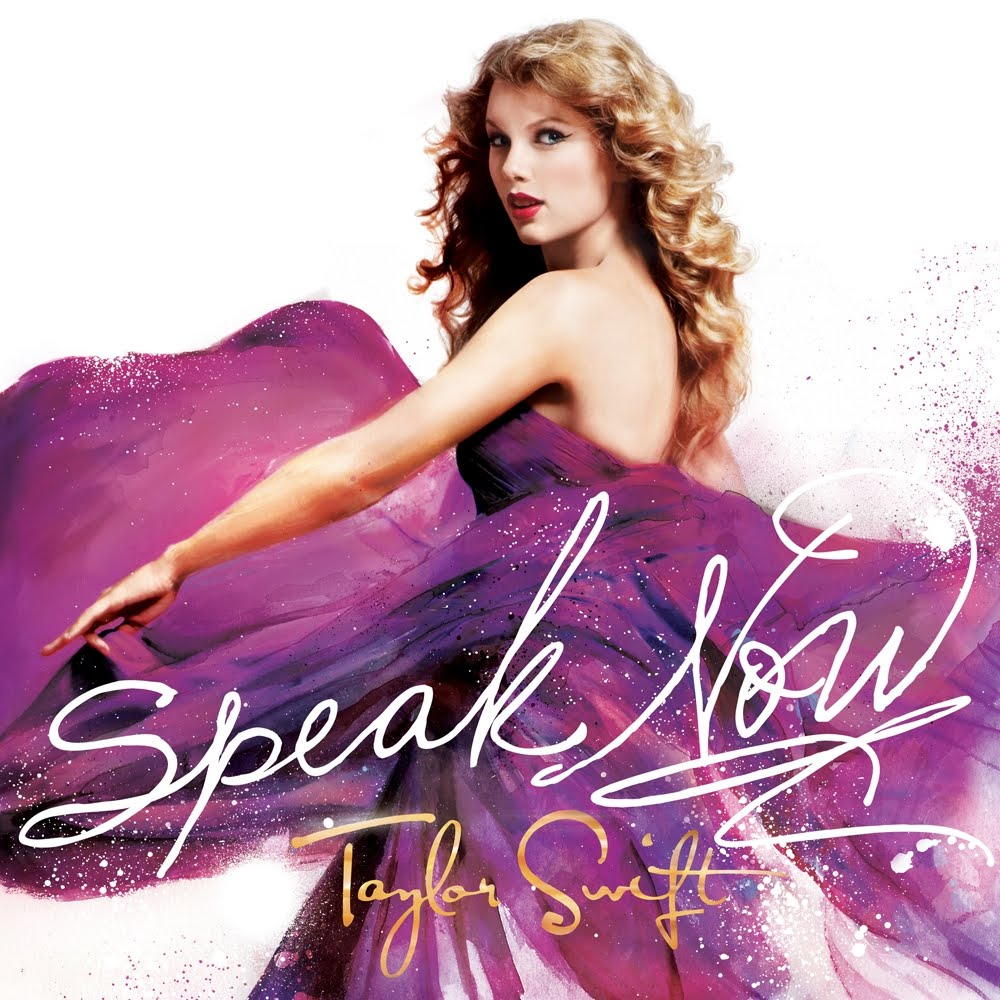

Taylor Alison Swift adalah seorang penyanyi-penulis lagu berkebangsaan Amerika Serikat.
Terlahir dengan nama lengkap Taylor Alison Swift lahir 13 Desember 1989.
Dia adalah putri dari Andrea Gardner seorang ibu rumah tangga, dan Scott Kingsley Swift, pialang saham.
Nenek dari ibunya, Majorie Finlay, adalah seorang penyanyi opera.
Darah seninya mengalir dari neneknya yang seorang penyanyi opera.
Taylor Swift juga mengidolakan penyanyi Shania Twain dan menjadikannya panutan dalam bernyanyi.
Merupakan seorang penyanyi-penulis lagu bergenre musik Country dan aktris berkebangsaan Amerika Serikat.
Swift paling dikenal oleh media karena rambut curly emasnya dan mata kucingnya yang berwarna biru.
1989 (Taylor's Version) adalah album rekaman ulang keempat oleh penyanyi-penulis lagu Amerika Serikat Taylor Swift yang dirilis pada 27 Oktober 2023, melalui Republic Records. Album ini adalah perekaman ulang dari album studio kelima Swift, 1989 (2014), dan mengikuti Speak Now (Taylor's Version), yang dirilis pada Juli 2023. Album ini terdiri atas ke-16 lagu yang direkam ulang dari album 1989 edisi deluxe dan lima lagu-lagu “From The Vault” yang belum pernah dirilis. Sebagian besar dari album ini diproduksi oleh Swift, Jack Antonoff, dan Christiopher Rowe. Secara komersial, album ini memeroleh penjaliran album terbesar pada 2023 di Spotify dan penjaliran terbesar sejauh ini di Amazon Music dan memuncaki tangga musik di delapan belas negara, termasuk Australia, Kanada, Prancis, Jerman, Italia, Spanyol, dan Inggris. Di Amerika Serikat, 1989 (Taylor’s Version) menjadi album ke-13 yang menduduki peringkat pertama di Billboard 200 dan yang merupakan album berpenjualan terbesar dalam seminggu sepanjang karirnya.
Speak Now adalah album studio ketiga karya penyanyi-penulis lagu asal Amerika Taylor Swift, dirilis pada 25 Oktober 2011 melalui Big Machine Records. Swift menulis seluruh lagu dalam album ini seorang diri selama dua tahun, sementara ia mempromosikan album studio keduanya Fearless (2008). Terinspirasi oleh transisi Swift dari seorang remaja menuju kedewasaan, Speak Now adalah sebuah album konsep longgar mengenai pengakuannya tentang cinta dan patah hati, dengan beberapa lagu terkait pengalaman publiknya. Setelah perilisan album ini, Swift mengadakan Speak Now World Tour, yang mengunjungi Amerika Utara, Asia, Eropa, dan Oseania mulai Februari 2011 hingga Maret 2012. Album tersebut didukung oleh enam singel, termasuk dua entri 10 besar Billboard Hot 100 AS, "Mine" dan "Back to December" dan dua singel nomor satu Hot Country Songs AS, "Sparks Fly" dan "Ours". Speak Now menerima ulasan-ulasan yang umumnya positif dari para kritikus musik untuk menawarkan keterlibatan emosional dan lagu-lagu yang ramah radio.
Midnights adalah album studio kesepuluh karya penyanyi-penulis lagu Amerika Taylor Swift, yang dirilis pada 21 Oktober 2022, melalui Republic Records. Diumumkan di Penghargaan Video Musik MTV 2022, album ini adalah karya pertama Swift sejak album-album 2020-nya, Folklore dan Evermore. Midnights adalah sebuah album konsep tentang kontemplasi nokturnal, ditulis dan diproduksi oleh Swift dengan Jack Antonoff sebagai kolaborator utamanya. Album ini terinspirasi oleh "13 malam-malam tanpa tidur" dalam hidup Swift. Dia mengangkat sebuah estetika visual glamor untuk album ini, diambil dari mode dan seni 1970-an. Menghindari bunyi alternative folk dari Folklore dan Evermore, Swift bereksperimen dengan gaya musik elektronika, synth-pop, dream pop, dan chill-out dalam Midnights, menggunakan groove yang halus, penyintesis antik, mesin drum, dan irama hip hop. Isi albumnya menampilkan lirik yang terbuka namun samar, mendiskusikan autokritik, kepercayaan diri, keraguan diri, kegelisahan, dan insomnia.
Red adalah album studio keempat karya penyanyi-penulis lagu asal Amerika Serikat, Taylor Swift. Album ini dirilis pada 22 Oktober 2012 oleh Big Machine Records. Judulnya merujuk kepada emosi "merah" yang riuh yang dialami Swift dalam pengonsepan album ini; lagu-lagunya mendiskusikan perasaan-perasaan yang rumit dan bertentangan sebagai akibat dari romansa yang memudar. Album ini menempati puncak Billboard 200 AS selama tujuh minggu, menjadikan Swift artis wanita pertama, dan artis kedua sejak the Beatles, untuk memiliki tiga album konsekutif untuk menempati nomor satu tangga album tersebut selama setidaknya enam minggu. Album tersebut memuncaki tangga album Australia, Britania Raya, Kanada, dan Selandia Baru. Red telah disertifikasi tujuh kali platinum oleh Asosiasi Industri Rekaman Amerika Serikat (RIAA) dan telah menerima sertifikasi multiplatinum di negara-negara lainnya. Album ini menerima nominasi untuk Album Terbaik Tahun Ini di Penghargaan Asosiasi Musik Country 2013, serta Album Terbaik Tahun ini dan Album Country Terbaik di Penghargaan Grammy 2014. Swift mempromosikan album tersebut dengan the Red Tour, tur konser country tersukses sepanjang masa, meraup pendapatan sebesar $150 juta.
Fearless adalah album studio kedua karya penyanyi-penulis lagu asal Amerika, Taylor Swift. Album ini dirilis pada 11 November 2008 oleh Big Machine Records di AS dan Kanada, edisi internasionalnya dirilis pada 9 Maret 2009. Sebagian besar ditulis selama Swift mempromosikan album debut eponimnya pada tahun 2007–2008, Fearless berisi penulisan lagu tambahan dari Liz Rose, Hillary Lindsey, Colbie Caillat, dan John Rich. Swift menulis tujuh dari tiga belas lagu dalam edisi standar album ini seorang diri, dan, dalam debutnya sebagai seorang produser rekaman, memproduksi seluruh lagunya bersama Nathan Chapman. Fearless adalah sebuah album country pop menampilkan permainan instrumen musik country seperti banjo, fiddle, mandolin, dan gitar akustik, diselingi dengan gitar elektrik. Para kritikus musik telah mencatat daya tarik crossover album ini yang disebabkan oleh pengaruh berbagai gaya di dalamnya, termasuk pop, folk, dan rok. Terinspirasi oleh perasaan Swift sebagai seorang remaja, lirik album tersebut menjelajahi romansa, patah hati, dan aspirasi. Judulnya merujuk pada tema menyeluruh dalam semua lagu album ini, di mana secara keseluruhan mereka menggambarkan keberanian Swift merangkul tantangan dalam cinta.
| NAMA | : | NUR AZIZAH NASWA |
| NIM | : | 10123261 |
| Kelas | : | IF-7 |